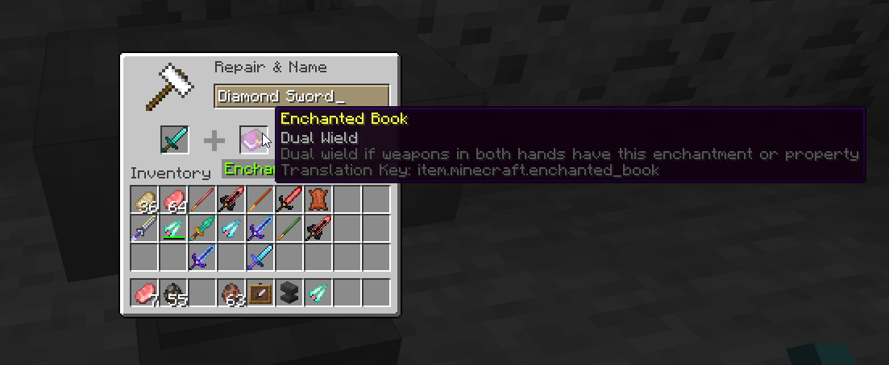

Minecraft Showcase
Below is a showcase of various Minecraft mods I have worked on since 2020
This is only a subset of visually apparent mods, but I have many other ones!
For a full list of my published projects, check out both my
CurseForge Profileand
Modrinth ProfileSee the Projects tab for descriptions of my
Minecraft Modsand
ModpacksSpoorn Bounty Mobs
myLoot


Pixel art hand drawn in photoshop
Pink


Pixel art hand drawn in photoshop, inspired by my beautiful girlfriend and her favorite color.
Spoorn Weapon Attributes


Spoorn Armor Attributes

Climb Ladders Fast
Gotta go fast
See Through Water/Lava

For me to simulate having 20/20 vision
Dual Wield
Spoorn Loot
cue sailor moon soundtrack ੈ ✩ ‧ ₊ ˚ ˚ ༘ ♡ ⋆ ｡ ˚